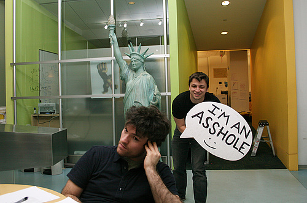

В архиве можно найти практически всё, но всё-таки можно улететь и в облака — там тоже много всего можно найти.
РЭ-12 на Дне физика-2004
Перебирал старые CD (DVD) диски и увидел один с надписью «Физфак 2004-2005». Как думаете, что на нём может быть записано? Конечно День физика, СтудВесна, Посвят и многое другое, что было на первом курсе нашей группы.
Решил поделиться отрывком со Дня физики, где РЭ-12 представляет свой номер «Аленький рулончик»:
Кстати, традиция Посвятов в 2004 году только началась. Мы были первыми.
26 сентября 2009 @ EunixЗабавное, Студенты, ТворчествоКомментарии к записи РЭ-12 на Дне физика-2004 отключены
Все, наверное, знают про пакеты с пузырьками. Это такие полиэтиленовые штуки, сделанные специально для сохранения в целости чего-либо. Обычно в интернете часто про них пишут: не знаю из-за чего, но говорят, что лопание этих пузырьков приносит удовольствие.
Американские офисные сотрудники нашли довольно забавное развлечение: сделали прикольное облачко. Но лучше сначала посмотреть:

I'm an asshole #18: Josh.
Кто-то придумал сделать облачко с надписью I’m an asshole и подносить к людям, а иногда даже и к животным. Напарница этого кто-то фотографирует, а потом они вместе выкладывают в виде тлога. Читать дальше »